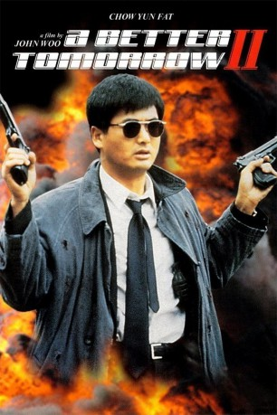
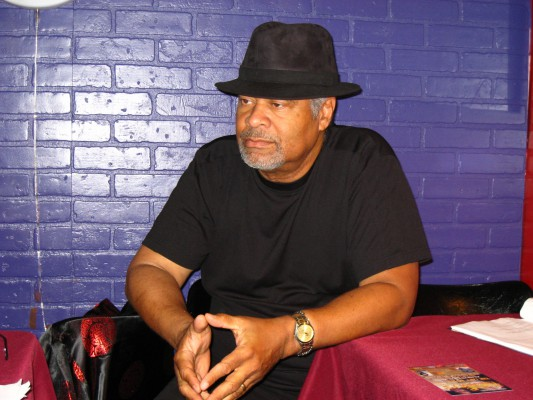
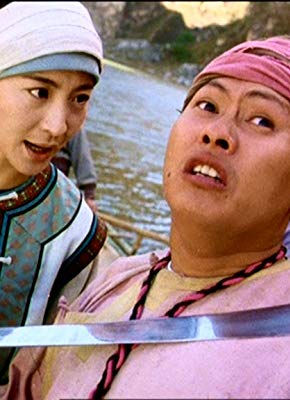

#1078 A Better Tomorrow 2
Alternativ: A Better Tomorrow II (Englischer Titel)
 
 IMDB-Wertung: 7.4 / 10
IMDB-Wertung: 7.4 / 10  Metascore: 0
Metascore: 0 
Sung Tse Ho und sein Bruder Tse Kit sind Agenten der Polizei und arbeiten im Untergrund für eine Schiffswerft. Dort sollen sie Beweise für die illegalen Handlungen des Geschäftsführers Lung sammeln. Tatsächlich ist aber Lungs Assistent Ko Ying Pui für die gesetzeswiedrigen Geschäfte verantwortlich, der außerdem vor hat Lung zu töten, um dann die Firma zu übernehmen. Die zwei Brüder helfen Lung und bringen ihn nach New York. Dort kümmert sich der Ex-Killer Ken (Chow Yun-Fat) um ihn. Es dauert nicht lange und Ken, Ho und Kit beschließen zusammen nach Hongkong zu reisen um jeden Preis Ko das Handwerk zu legen.
Jahr: 1987
Dauer: 105 Minuten
FSK: 18
Land: Hong-Kong Studio: Cannon/VMPTonspuren: DD5.1 - ,
Untertitel: Englisch,
Auflösung: 1080p (1920x1080) Größe: 19558 MB
Genre: Action, Krimi, Drama, Thriller
Regisseur:  John Woo
John Woo
Drehbuch: Hark Tsui, John Woo
Soundtrack: Joseph Koo, Lowell Lo
Darsteller:
 Yun-Fat Chow als Ken / Mark Lee / Mark 'Gor'
Yun-Fat Chow als Ken / Mark Lee / Mark 'Gor' Leslie Cheung als Sung Tse-Kit
Leslie Cheung als Sung Tse-Kit Kenneth Tsang als Uncle Ken
Kenneth Tsang als Uncle Ken Siu-Ming Lau als Inspector Wu
Siu-Ming Lau als Inspector Wu-  Charles Dumas als New York Cop
 Lung Ti als Sung Tse-Ho
Lung Ti als Sung Tse-Ho Dean Shek als Lung Si
Dean Shek als Lung Si- Shan Kwan als Ko Ying Pui
- Emily Chu als Jackie Sung
- Man-Tat Ng als Boss Wong
- Ming Yan Lung als Chong
- Peter Wang als Father Sam
 Fui-On Shing als Pui's Right-Hand Man
Fui-On Shing als Pui's Right-Hand Man- Chung Lin als Pui's Partner
- Regina Kent als Peggy Lung
- Ken Boyle als Bearded Crime Boss
- Louis Roth als Protection Money Collector
- Ming Leung als Uncle Chan
- Mike Abbott als Assassin
- Chindy Lau als Ken's Restaurant Worker
- Mark King als Shotgun Pete
- Shung Fung Lau als Pui's Thug
- Steve Mak als Pui's Thug
-  Foo-Wai Lam als Pui's Thug
- Wei Ho Tu als Pui's Thug
- Seng-Kwong Chang als Pui's Thug
- Shu-Kei Law als Ballroom Guest
- K.K. Wong als Ballroom Guest
- Fook-On Shing als Boss Wong's Thug
- Dean Harrington als Hitman in the hallway
- Wayne Archer als Assassin
 Waise Lee als Shing , archive footage
Waise Lee als Shing , archive footage- Paul Francis als
- Sammy Lee als
- Marco Wo als
- Sing Chau Wai als
- Simon Broad als Mark Lee , uncredited
Datei: X:\FSK18-Eastern-Collections\A Better Tomorrow\Better Tomorrow 2, A (1987, FSK18, 1920x1080).mkv seit 18.05.2015
Festplatte: FSK18
 Es gibt insgesamt 8 Filme in der Gruppe 'FSK18-Eastern-Collections\A Better Tomorrow'
Es gibt insgesamt 8 Filme in der Gruppe 'FSK18-Eastern-Collections\A Better Tomorrow'